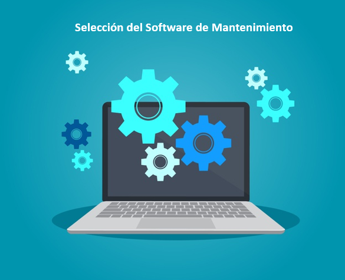

Servicio de Hosting
Servicio de publicación de un sitio o aplicación web en Internet. Cuando te registras en nuestro servicio de hosting, básicamente alquilas un espacio en un servidor donde puedes almacenar todos los archivos y datos necesarios para que tu sitio web funcione correctamente.
Nuestro servicio de hosting es de activación inmediata; Y para reducir los riesgos, todos los planes de Hosting vienen con una garantía de 30 días para la devolución del dinero para que puedas comprobar que nuestro servicio realmente se ajusta a tus necesidades.

Creación de Fan page
Servicio de creación y publicación de fan page para tu empresa o para tus actividades personales.
Ventajas que puedes tener al trabajar con una fan page:
La Fan Page no tiene límite de seguidores y tampoco tiene límite de personas a las cuales puedes enviar mensaje.
Las Fan Page están indexadas, esto quiere decir que tu página aparecerá en los buscadores, dándole a tu marca mayor visibilidad y mejor posicionamiento.
Puedes verificar tu cuenta para que tus clientes sepan que es auténtica.
Las Fan Page tienen excelentes herramientas de “analytics” lo que te permite monitorear el alcance de las publicaciones, cuántas personas han interactuado con tu contenido, lo que a su vez te permite analizar la información para ofrecer a los seguidores el contenido que desean.
Una función muy importante dentro de Fan Page es que puedes poner etiquetas. Hay una cantidad de etiquetas ya creadas en la plataforma que sirven para cargar el contenido de tu página desde el servidor web. Las etiquetas sólo son permitidas en las Fan Page.
Mantenimiento de Software y Hardware
MANTENIMIENTO PREVENTIVO HARDWARE
Dentro de nuestro servicio realizamos operaciones de mantenimiento, este va destinado a la conservación de equipos o instalaciones mediante realización de revisión y reparación que garanticen su buen funcionamiento y fiabilidad. El mantenimiento preventivo se realiza en equipos en condiciones de funcionamiento, Las tareas de mantenimiento preventivo incluyen acciones como cambio de pasta térmica y la limpieza interna del computador, etc. El mantenimiento preventivo debe evitar los fallos en el equipo antes de que estos ocurran.
MANTENIMIENTO PREVENTIVO SOFTWARE
Dentro de nuestro servicio de mantenimiento preventivo de software nos centramos en el proceso de mejora y optimización el software que se ha instalado, este mantenimiento lo realizamos para la prevención de posibles problemas que puedan llegar a surgir a medida que se utiliza el computador o equipo.
